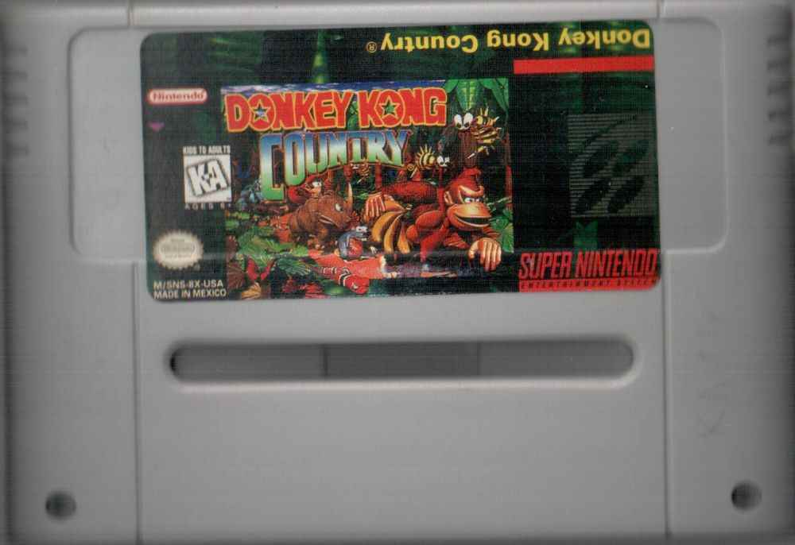

Donkey Kong Country SNS-8X-USA
Еще одна копия Кантри, на этот раз интересна тем, что палево всплывает наружу при первом же взгляде:В чем же прокол на этот раз, что выдает пиратский продукт?
1) Криво наклеенная, а вернее изначально не подогнанная по размеру поля обложка самого картриджа.
2) Надпись SNS-8X-USA говорит о том что скопирована она с американского картриджа, хотя форма корпуса - европейская.
3) Отсутствие винтиков в корпусе ( их судя по всему изначально туда и не ставили, то есть я веду к тому что никто их не выкрутил).
4) Отличающаяся задняя часть картриджа, вместо отверстий - вмятины, а надписи совершенно другие.
Но самое интересное ожидает нас внутри. Вы думаете купили картридж подпольного производства подешевле и просто так в него поиграете? Да хрен там плавал, игра не запускается на приставке PAL-региона, хотя сам картридж сделан под европейский формат, игра выдает былинный отказ, запуская после логотипа Rare надпись в духе эта игра не предназначена для вашей Супер Нинтендо.
А вся соль заключена в этом самом SNS-8X-USA, это и нежелание запускаться говорит о том что внутри версия американская которую тупо спиратили под европейский картридж. Но видимо никто не знал что игра NTSC региона программно чаще всего не запускается на приставках PAL, поэтому такая чушь и вышла. Для игры нужен ключ-адаптер чтобы поиграть на европейской SNES, да и на американской тоже, потому как запихнуть американскую версию в европейский формат мог додуматься только истинный "гений".
Глядя на плату интересно то, что она сделана на 4 каплях и микросхемах, но больше всего удивления вызывает то что в картридже 2 батарейки. Я проверил, каждая из них выдает по 0.73 вольта, то есть суммарно 1.5 вольта. Чем было обусловлено решение ставить две, а не одну батарейку мне лично не понятно, но это очень оригинально.
Внутри игра: Donkey Kong Country ( Американская версия ).
Дополнительные фото и описание к ним:
